Enhanced XOR Results - Top Left Corner
XOR ironman+hidden - Amplified x20
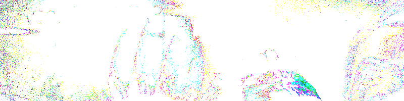
XOR ironman+hidden - Threshold 10
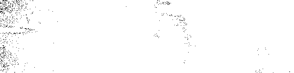
XOR ironman+hidden - Threshold 20
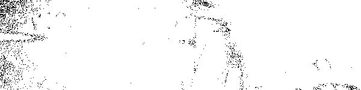
XOR ironman+hidden - Threshold 30
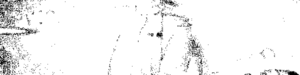
XOR ironman+hidden - Threshold 50
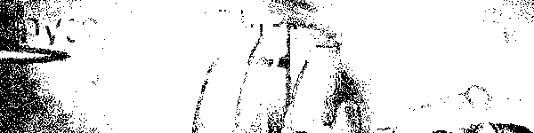
XOR ironman+hidden - Contrast x10
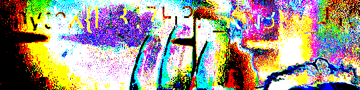
XOR ironman+hidden - Bright x5
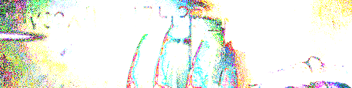
XOR ironman+hidden - Inverted + Enhanced
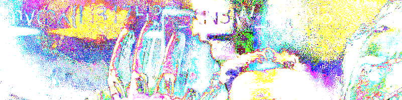
XOR ironman+hidden - Red channel binary
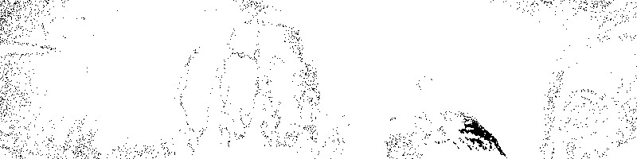
XOR ironman+hidden - Green channel binary
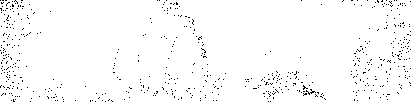
XOR ironman+hidden - Blue channel binary
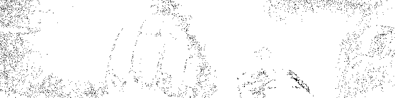
XOR ALL THREE - Amplified x20
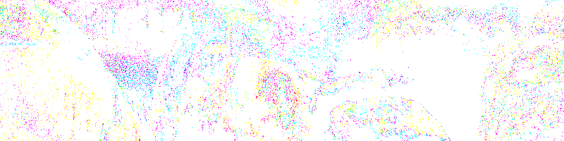
XOR ALL THREE - Threshold 5
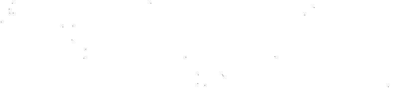
XOR ALL THREE - Threshold 10
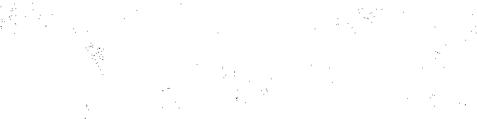
XOR ALL THREE - Threshold 20
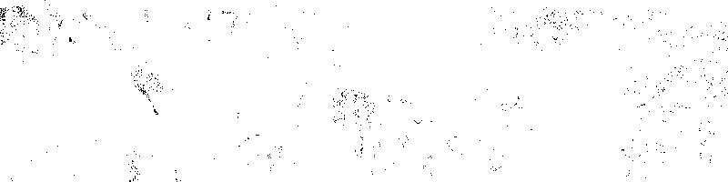
XOR ironman+avif - Amplified
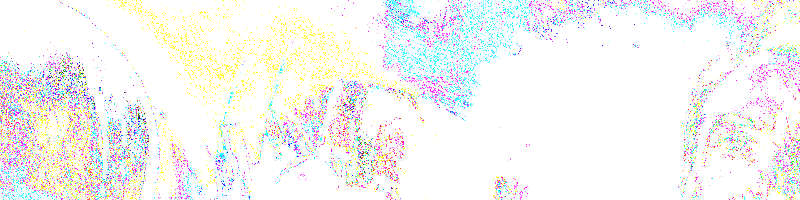
XOR hidden+avif - Amplified
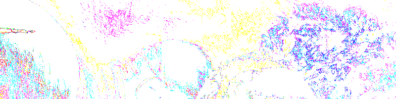
Diff ironman-hidden - Amplified
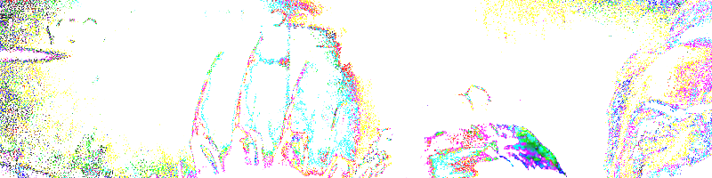